WorkBuddy 小白入门指南
从界面解析到核心功能，配高清操作截图，看完就能上手 —— 基于「WorkBuddy 60 分钟保姆级教程」整理。
观看原视频 哔哩哔哩 · BV1EBui6xEbT一、WorkBuddy 是什么
WorkBuddy 是一款「数字牛马」式的 AI 智能体（Agent）。你可以把它理解为能在你电脑里直接帮你干活的 AI：写方案、做表格、分析数据、写代码、做海报、开发软件，甚至接管浏览器操作各种软件，把成果直接摆到你面前。
它上手门槛很低，不需要网络环境、不需要复杂配置，对新手极其友好。
一句话理解：它不是「给你一段文字」，而是「帮你产出一个可用成果」——一份报告、一个表格、一个网页、一张图，甚至一个自动跑起来的定时任务。
二、认识界面
第一次打开 WorkBuddy，先别急着对话，花一分钟看懂界面布局。整个界面分为几个核心区域：
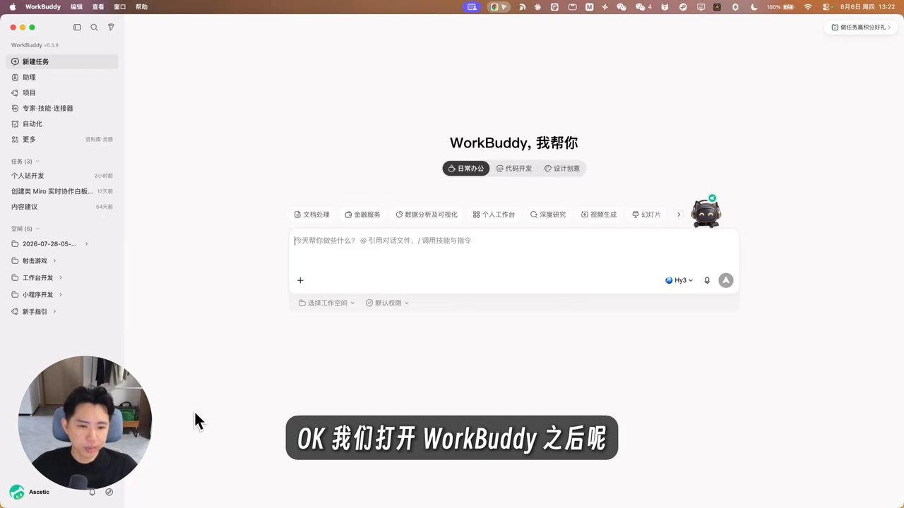
- 左上角功能区：专家、连接器、自动化等核心能力入口；
- 左侧任务区：单次对话的列表，临时任务在这里展示；
- 左侧下方「空间」：做项目管理的地方；
- 中间对话窗口：发起任务、沟通问题的主战场；
- 右侧预览区：AI 产出的成果（文档、PPT、网页等）在这里预览。
三、首次使用先做三个设置
博主特别提醒：第一次使用别急着对话，先设置三样东西。点左下角头像 → 设置。
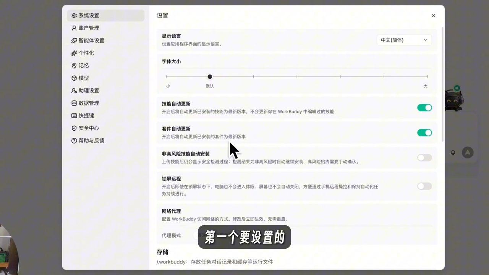
- 存储路径：Windows 默认存 C 盘，可改成你自己想存的路径，避免撑爆磁盘；Mac 只有一块硬盘，无所谓。
- 个性化风格语调：调整 WorkBuddy 跟你说话的方式（直言不讳 / 天马行空 / 高效务实等），不影响做事能力，只影响说话风格。
- 开启「生成对话记忆」：让它从每次对话中提取关键信息记下来，越用越懂你、越个性化。
四、模型选择与积分
WorkBuddy 是智能体架构，真正帮你思考、写字、做图、写代码的是背后的大模型（右下角可选）。不同模型能力不同、擅长领域不同、消耗积分也不同。
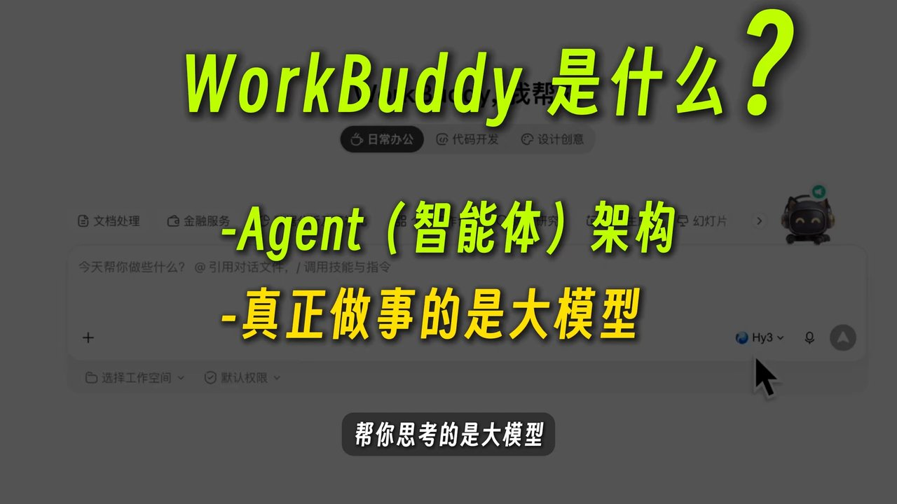
积分怎么理解？WorkBuddy 不是完全免费，使用消耗积分。积分可通过：新用户注册赠送、每日签到、做任务获得，也可以直接充值会员。左下角能看到积分余额。
省钱技巧：选「Auto 自动」让 AI 判断最合适的模型；或者用倍率低的免费模型（视频里提到的某模型当时倍率 0.00，即限时免费）。积分消耗大的一般能力更强，但不绝对，具体看任务。
五、工作空间（项目对话）—— 最重要的概念
这是视频里反复强调、新手最容易踩坑的地方：对话分两种 —— 单次对话 和 项目对话（工作空间）。
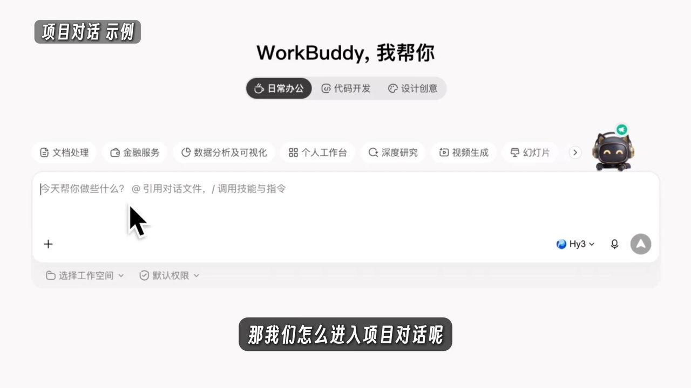
举个视频里的例子：一个「数据分析」文件夹里有三张表格。如果你不选工作空间直接问「我今年销售额怎么样」，AI 会一脸懵地说「没看到销售数据」。但如果你先进入这个文件夹的工作空间再问，它就能读取文件夹里的表格，把总订单、退款、各月趋势都分析得清清楚楚。
类比：工作空间就像一个「办公室」。把 AI 放到办公室（选工作空间）里，它就能看到这个办公室里的所有文件资料，结合背景信息给你更准确的答案。长期工作相关的事，一定要用工作空间，别偷懒。
六、三种工作模式
点对话框旁的「+」，里面有个「模式」选项，其实有三档：
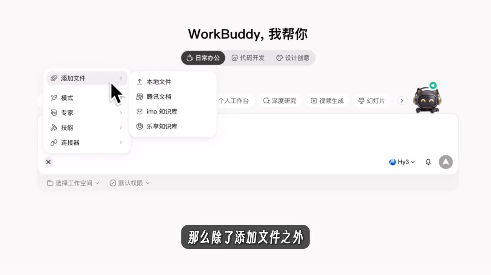
执行模式（默认）
你说干啥它就干，能操作电脑、增删读写文件。适合简单明确的任务。
问答模式
只能聊天、看内容，不能碰你的电脑。适合先聊清思路、查资料，避免 AI 没理解就乱干。
计划模式
先规划、会反问你确认细节，产出执行方案，你满意了它才开始干。适合复杂项目。
怎么选：简单任务（两三页数据出报告）直接执行；复杂项目（十几组数据、要做策略）先开计划模式，让它把抽象问题问清楚、揭示盲区、生成方案再干。
七、增强提示词 —— 小白的救星
不会写提示词？没问题。输入一句话需求后，输入框旁会冒出一个「小星星」按钮，叫「增强提示词」。
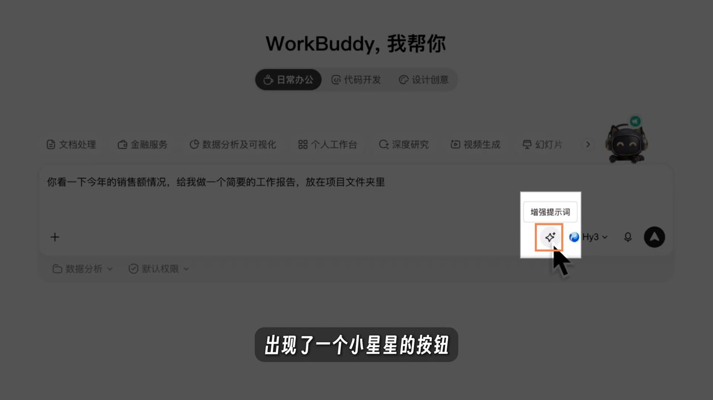
比如你只说一句「帮我做销售可视化报告」，点一下增强提示词，它就会自动展开成「创建网页形式的销售数据可视化报告，包含数据、图表、结论、分析，适合向领导展示」等一、二、三、四条具体要求。你不用背什么提示词公式，写抽象点也没关系。
八、三种工作场景 + 模板
对话窗口上方有三个场景入口：日常办公 / 代码开发 / 设计创意。选不同场景，会给你不同的快捷选项和提示词模板。
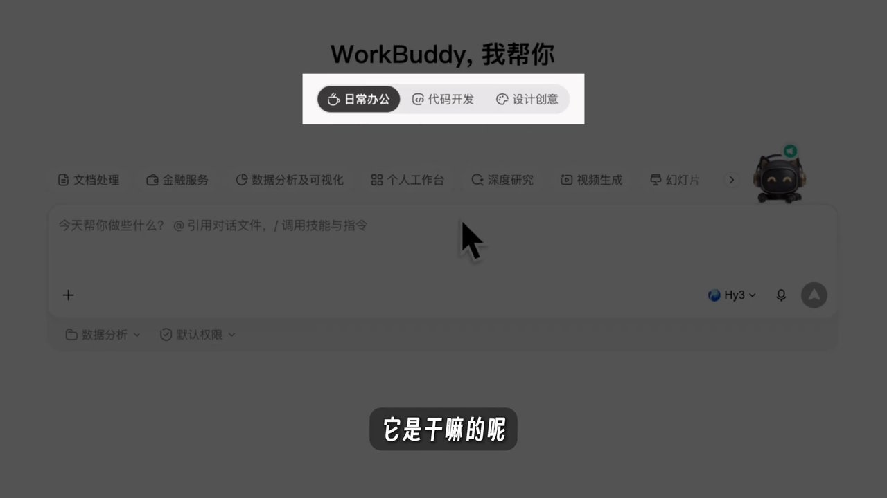
比如选「代码开发 → 网站开发」，会有企业官网、个人博客、电商首页等选项和现成案例，点开案例还有个「一键做同款」按钮，复刻后按自己需求修改即可——相当于站在巨人的肩膀上。
九、专家 —— 带人设和知识库的 AI
左上角功能区里的「专家」是 WorkBuddy 最核心的能力之一。每个专家都是写好的人设 + 专业领域知识库的 Agent，能在特定领域给出更好的结果。
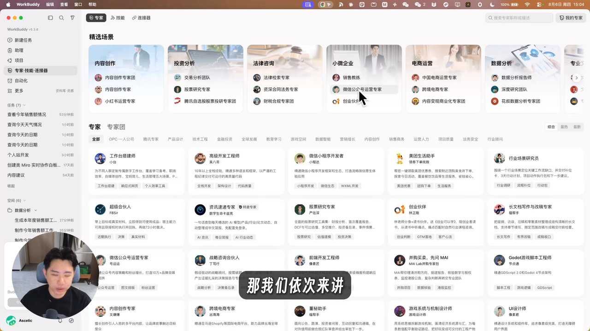
视频里做了个对比实验：让「爆款选题策划专家」和普通对话各写「高考热点的三个爆款选题」。普通模式 48 秒输出三个平平无奇的选题；专家则调用自己的知识库（12 条心法 + 8 个维度），思考 4 分多钟，给出了主推选题、时效性分析、每个选题下的标题方案，专业度碾压。
怎么用：点专家「召唤」后自动跳转到对话页，之后你提的需求就会由这位专家用它的知识和工具来解答。召唤过会记在「+」里，下次一键复用。
十、专家团 —— 组团帮你干活
如果说专家是「一个人」，那专家团就是「一个团队」：围绕某个业务场景，组合了多个带人设、带知识库的 Agent，还有一个「主理人」负责统筹调度。
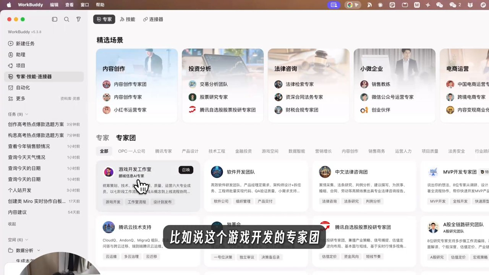
视频里的实战对比很有说服力：同样「分析销售数据并生成报告」，单个专家产出的是一个「名字叫仪表盘、实际是纯 Excel」的结果；而专家团则派出数据编排师→数据科学工程师→可视化分析师→报告撰写者，分工协作，最终交付带图表的交互式仪表盘 + 结构化报告 + 行动建议，还附上完整的 HTML 报告页面。
代价：专家团用时更长（视频里花了 27 分钟）、消耗积分更多（如果用非免费模型）。但「时间换质量」性价比极高——原本两三天的工作，半小时搞定。
十一、技能（Skill）—— 决定「怎么干活」
如果专家决定「谁来干活」，那技能（Skill）就决定「怎么干活」——它是一套流程、一套 SOP，让 AI 每次做同类任务都稳定、高效。
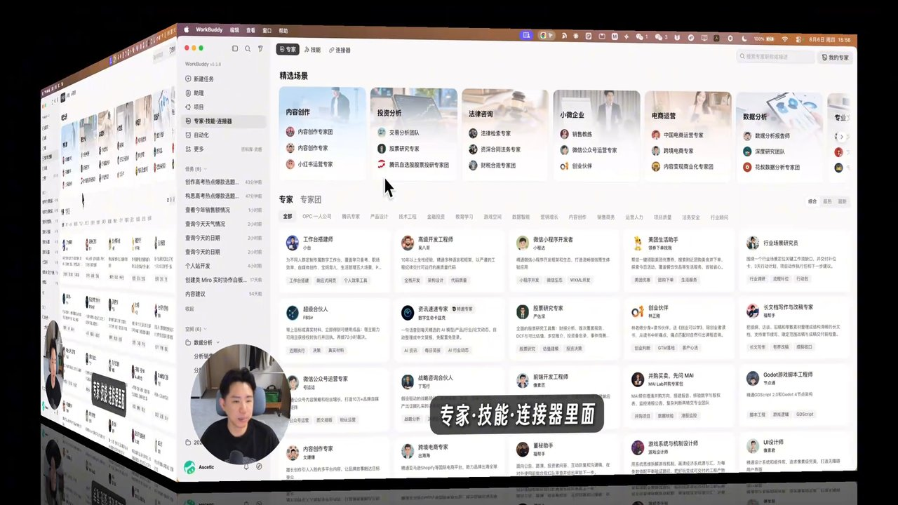
视频里用「把销售报告做成 PPT」做了对比：不调技能的版本是「中规中矩的标准 PPT」；显式调用技能后，做出来的是带动画、特定配色字体排版的网页式 PPT。技能约束了动画、颜色、字体、排版，让结果风格统一稳定。
技能调用分两种：
- 显性调用：你主动安装并选择某个技能，它必须按该技能规则执行；
- 隐性调用：AI 识别你的意图后自动匹配已装技能，但不是百分百成功，是概率触发。
进阶玩法：除了装现成的（还有 Skill Hub 技能市场可搜索），你还能自制技能——做完一整套流程后，跟 AI 说「把我刚才的流程做成技能」，它就把流程固化成技能，以后反复调用。
十二、连接器（MCP）—— 打通第三方应用
连接器就是之前很火的 MCP 概念：让 Agent 打通飞书、钉钉、邮箱、网盘等第三方应用，读取其中的信息、操作这些软件。
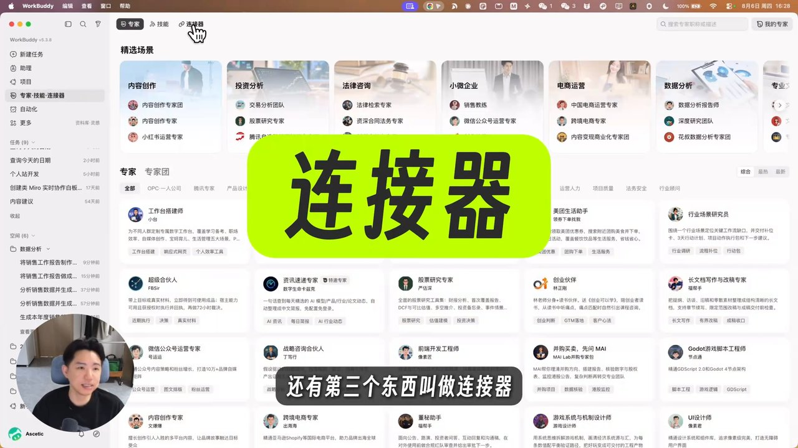
视频以百度网盘为例：连接授权后，直接问「我网盘总容量多少、用了多少」，AI 秒回「总容量 19.8T、已用 17.4T、使用率 88.2%」。过去要打开网盘一个个找，现在一句话搞定。
组合拳：数据在网盘里？用连接器取数据 → 用专家团分析 → 用 PPT 技能做成 PPT。给 AI 装上「手脚」，做事空间、方法论、效率都会越来越强。
十三、自动化 —— 你的定时秘书
自动化就是定时执行的任务安排：像找了个秘书，告诉他什么时候干什么事，他按时按点帮你执行。
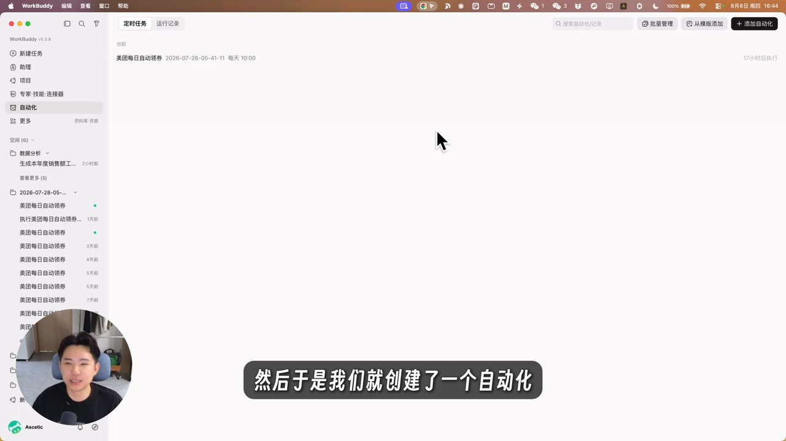
博主自己的例子：有个「每日领优惠券」的自动化，每天上午 10 点自动领取。你根本不用在复杂界面里手动配置——直接说「帮我设定一个定时任务，每天上午 10 点自动领取优惠券」，它就自动建好。
更多例子：每天 9 点收集最新新闻推送到邮箱/飞书；每周五 17 点汇总本周工作生成周报发钉钉；提前半个月提醒你准备生日礼物…… 全都用自然语言一句话搞定。
十四、总结
WorkBuddy 不是简单的对话机器人，而是「对小白极其友好、开箱即用」的入门级 Agent 产品。记住这几张牌：
- 模型 —— 决定「谁来思考」，右下角选，看倍率省积分；
- 工作空间 —— 决定 AI 能否看到你的文件资料，长期工作必用；
- 专家 / 专家团 —— 决定「谁来干活」，专业问题找对口专家，复杂项目用专家团；
- 技能 —— 决定「怎么干活」，稳定输出靠它；
- 连接器 —— 给 AI 装「手脚」，打通第三方应用；
- 自动化 —— 定时自动执行，解放你记事的脑力。
最后：要问的问题不再是「这件事怎么做」，而是「我该做点什么」。挑一个真实需求，用 Agent 模式试一次——实践是最好的老师。